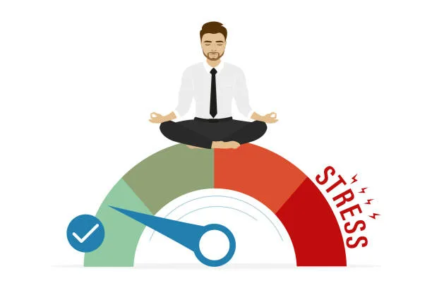

Стартовый блок
Навыки

1.Стрессоустойчивость
это способность человека противостоять стрессу и адаптироваться к сложным ситуациям, сохраняя спокойствие, рациональность и позитивный настрой.
2.Способность адаптироваться
умение эффективно приспосабливаться к новым условиям, обстоятельствам и вызовам.

3.Саморазвитие.
это процесс, направленный на улучшение личных и профессиональных качеств. Он включает в себя постоянное обучение, работу над собой и развитие навыков.
Веб-разработчик